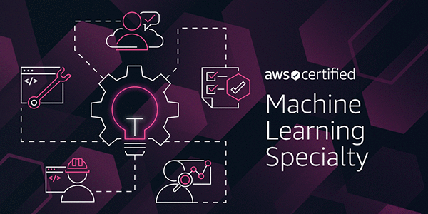
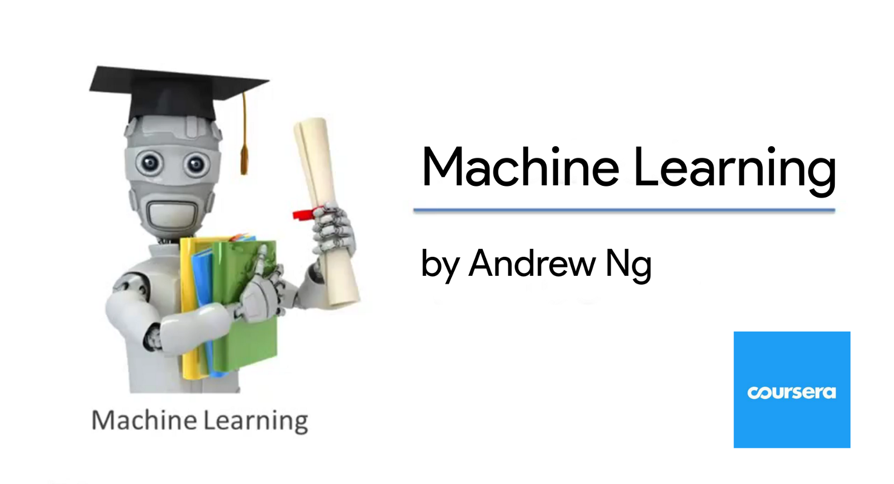
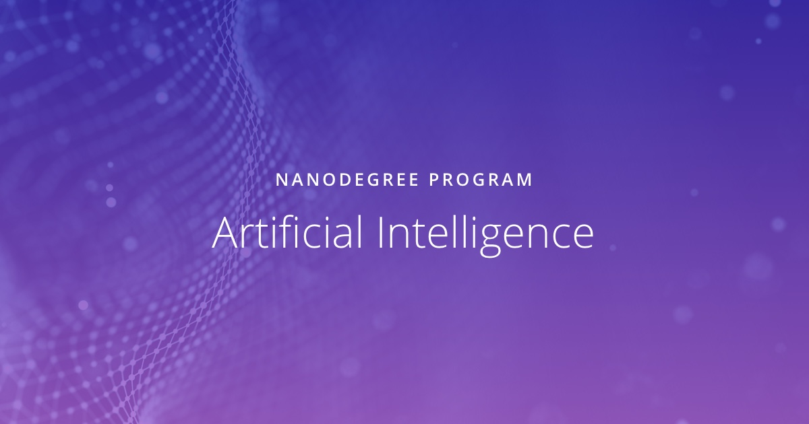

AWS Certified Machine Learning
Validated expertise in designing, implementing, and maintaining scalable ML solutions on AWS.
Hey, this is Daniel Legorreta. I am a highly skilled analytical consultant and AI engineer with a background in physics and mathematics (specializing in pure mathematics). With over a decade of experience, I specialize in architecting and deploying statistical, machine learning, and deep learning models across large-scale distributed systems. I am dedicated, enthusiastic, and fundamentally passionate about leveraging data to solve the most difficult problems.
In my current role within a fast-growing environment, I apply my skills dynamically as a Data Engineer, Machine Learning Engineer, and Data Scientist. This hands-on capability is complemented by my previous work as a consultant, researcher, and collaborator for numerous companies across varied industries.
I typically tackle the following core challenges:
A lifelong learner, I am enthusiastic about researching and implementing cutting-edge techniques and algorithms in personal projects. I prioritize staying up-to-date with the latest technological advancements and possess a deep appreciation for mathematics. My mathematical interests include algebraic topology, geometry, probability, and large graph theory, fields that I recognize as increasingly integral to Machine Learning, Deep Learning, and Computer Science.
Below you can find some research links on the relationship between mathematics and computer science.
My major was in pure mathematics, I graduated from IPN in Mexico. I obtained solid foundations in mathematics and physics, which helped me to develop professionally in applications of mathematics to various problems in the industry.
My thesis work was on the application of algebraic topology in economics (paradox of social choice) under the supervision of the Phd. Jesus Gonzales Espino.
In parallel, I worked as a research assistant in Time Series and Complex Systems applications at the UPIITA-IPN Complex Systems Laboratory, under the supervision of Phd. Lev Guzman. I also worked as a research assistant in Mathematical Analysis under the supervision of Phd.Ramírez de Arellano.
I learned to program in C, C ++, Pytho, R, SQL and Bash before finishing college, and since 2008 I started to implement and develop components and models for various business cases. Since 2012 I specialized in Forecasting Models, I developed models for various companies, including Softtek, which predicted the demand for applications or systems (of more than 100 apps and systems).
After 2015 I specialized in Machine Learning and started using Deep Learning for different problems. In general, most of my projects have been on 3 topics:
Recently I have worked on projects that require the implementation of NLP techniques, both to process texts and to create chatbots or Agents.
If you want to review more about projects in my professional career, you can read my resume or you can send me a message and I will gladly answer you.Continuous education is key in an ever-evolving field like AI. The certifications and courses below represent my ongoing commitment to mastering cloud architecture, deep learning ecosystems, and scalable data engineering. (My academic background includes master's level coursework in pure mathematics).

Validated expertise in designing, implementing, and maintaining scalable ML solutions on AWS.
Comprehensive specialization on building production-ready deep learning models in the Google Cloud ecosystem.

Stanford's foundational course that cemented my understanding of core predictive modeling.

Intensive program focusing on classical AI algorithms, optimization, and advanced heuristics.
Completed official AWS training tracks covering ML terminologies, CRISP-DM, and solving real business challenges in the cloud.
Specialization essential for mastering distributed data processing architectures like Apache Spark.